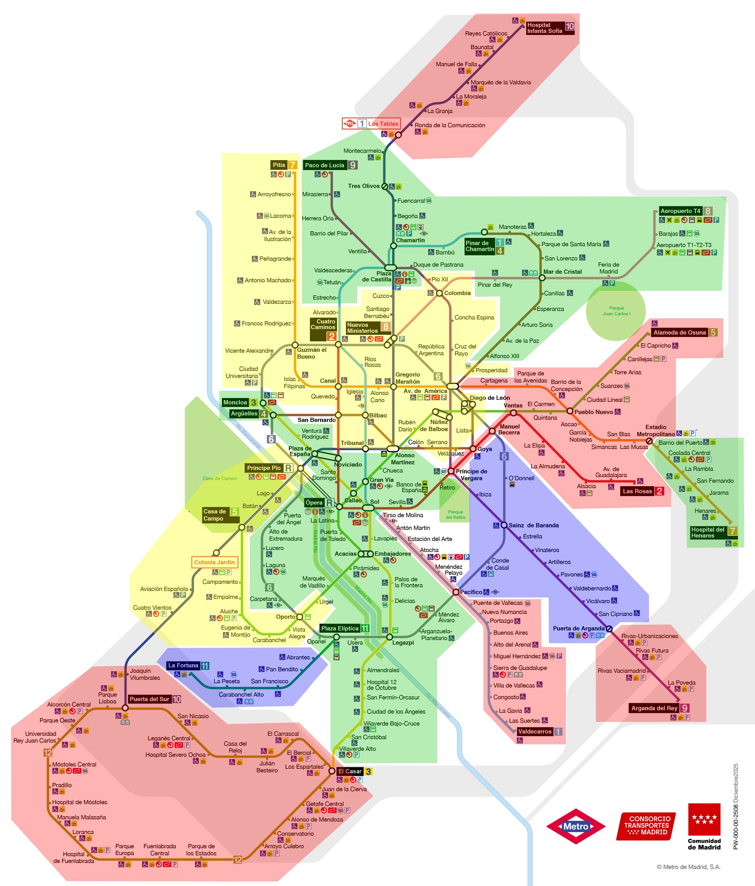

Análisis del grafo de la red de Metro de Madrid
Grado en Matemáticas | Análisis de redes
rm(list = ls())
file.remove("metro.sqlite")Este proyecto modeliza la red del Metro de Madrid como un grafo ponderado para estudiar su conectividad, rutas óptimas, estaciones críticas y fracturación. Se aplican algoritmos clásicos de teoría de grafos para identificar nodos estratégicos, calcular rutas óptimas entre puntos de interés y simular escenarios de fallo. Los resultados se visualizan y se interpretan en términos de planificación de infraestructura.
Partimos de los datos publicados por el consorcio regional de transportes que recogen información sobre los tramos de cada línea.
1 Carga y limpieza de datos
Estos son las librerías de R que emplearemos
library(DBI)
library(RSQLite)
library(igraph)
library(dplyr)
library(DT)
library(networkD3)
library(htmltools)
library(knitr)
library(ggplot2)
library(plotly)
library(ggdendro)
library(dendextend)
library(stringr) Cargamos los datos en una tabla SQL para poder hacer consultas
con <- dbConnect(SQLite(), "metro.sqlite")
datos <- read.csv("M4_Tramos.csv", quote="")
dbWriteTable(con, "M4_TRAMOS", datos, overwrite = TRUE)
filas <- dbGetQuery(con,"SELECT COUNT(OBJECTID) FROM M4_TRAMOS")
vars <- length(unlist(dbGetQuery(con, "pragma table_xinfo(M4_TRAMOS);")["cid"]))
dbGetQuery(con, "pragma table_xinfo(M4_TRAMOS);") cid name type notnull dflt_value pk hidden
1 0 OBJECTID INTEGER 0 NA 0 0
2 1 IDTRAMO TEXT 0 NA 0 0
3 2 FECHAACTUAL INTEGER 0 NA 0 0
4 3 MODO INTEGER 0 NA 0 0
5 4 CODIGOITINERARIO INTEGER 0 NA 0 0
6 5 CODIGOGESTIONLINEA TEXT 0 NA 0 0
7 6 NUMEROLINEAUSUARIO TEXT 0 NA 0 0
8 7 SENTIDO INTEGER 0 NA 0 0
9 8 TIPOITINERARIO INTEGER 0 NA 0 0
10 9 CODIGOESTACION INTEGER 0 NA 0 0
11 10 CODIGOPOSTE INTEGER 0 NA 0 0
12 11 CODIGOANDEN INTEGER 0 NA 0 0
13 12 NUMEROORDEN INTEGER 0 NA 0 0
14 13 IDENTIFICADORTIPOPARADA TEXT 0 NA 0 0
15 14 TIPOPARADA TEXT 0 NA 0 0
16 15 DENOMINACION TEXT 0 NA 0 0
17 16 CODIGOPROVINCIA INTEGER 0 NA 0 0
18 17 CODIGOMUNICIPIO INTEGER 0 NA 0 0
19 18 MUNICIPIO TEXT 0 NA 0 0
20 19 CORONATARIFARIA TEXT 0 NA 0 0
21 20 DIRECCION TEXT 0 NA 0 0
22 21 FECHAALTA INTEGER 0 NA 0 0
23 22 FECHAINICIO INTEGER 0 NA 0 0
24 23 FECHAFIN INTEGER 0 NA 0 0
25 24 LONGITUDTRAMOANTERIOR REAL 0 NA 0 0
26 25 VELOCIDADTRAMOANTERIOR REAL 0 NA 0 0
27 26 MODOLINEA INTEGER 0 NA 0 0
28 27 MODOINTERCAMBIADOR INTEGER 0 NA 0 0
29 28 CODIGOINTERCAMBIADOR INTEGER 0 NA 0 0
30 29 CODPROV_LINEA INTEGER 0 NA 0 0
31 30 CODMUN_LINEA INTEGER 0 NA 0 0
32 31 IDFTRAMO TEXT 0 NA 0 0
33 32 CODIGOOBSERVACION INTEGER 0 NA 0 0
34 33 CODIGOSUBLINEA INTEGER 0 NA 0 0
35 34 DENOMINACION_SAE TEXT 0 NA 0 0
36 35 IDFLINEA TEXT 0 NA 0 0
37 36 Shape__Length REAL 0 NA 0 0El dataset tiene 560 observaciones con 37 variables. Además cada parada está duplicada por cada sentido y línea por lo que será necesario ordenar los datos para poder construir nuestro grafo con la librería igraph. Mostramos las 10 primeras filas:
SQL
SELECT * FROM M4_TRAMOS LIMIT 10 OBJECTID IDTRAMO FECHAACTUAL MODO CODIGOITINERARIO
1 1 4_336284_278__755_I 20251030 4 336284
2 2 4_336285_278__756_I 20251030 4 336285
3 3 4_336284_279__757_I 20251030 4 336284
4 4 4_336285_279__758_I 20251030 4 336285
5 5 4_336284_280__759_I 20251030 4 336284
6 6 4_336285_280__760_I 20251030 4 336285
7 7 4_336284_281__761_I 20251030 4 336284
8 8 4_336285_281__762_I 20251030 4 336285
9 9 4_336280_204__425_I 20251030 4 336280
10 10 4_336281_204__426_I 20251030 4 336281
CODIGOGESTIONLINEA NUMEROLINEAUSUARIO SENTIDO TIPOITINERARIO CODIGOESTACION
1 102 10b 1 1 278
2 102 10b 2 1 278
3 102 10b 1 1 279
4 102 10b 2 1 279
5 102 10b 1 1 280
6 102 10b 2 1 280
7 102 10b 1 1 281
8 102 10b 2 1 281
9 101 10a 1 1 204
10 101 10a 2 1 204
CODIGOPOSTE CODIGOANDEN NUMEROORDEN IDENTIFICADORTIPOPARADA TIPOPARADA
1 NA 755 7 TI I
2 NA 756 5 TI I
3 NA 757 6 TI I
4 NA 758 6 TI I
5 NA 759 5 TI I
6 NA 760 7 TI I
7 NA 761 4 TI I
8 NA 762 8 TI I
9 NA 425 20 TI I
10 NA 426 2 TI I
DENOMINACION CODIGOPROVINCIA CODIGOMUNICIPIO MUNICIPIO
1 LA GRANJA 28 6 ALCOBENDAS
2 LA GRANJA 28 6 ALCOBENDAS
3 LA MORALEJA 28 6 ALCOBENDAS
4 LA MORALEJA 28 6 ALCOBENDAS
5 MARQUES DE LA VALDAVIA 28 6 ALCOBENDAS
6 MARQUES DE LA VALDAVIA 28 6 ALCOBENDAS
7 MANUEL DE FALLA 28 6 ALCOBENDAS
8 MANUEL DE FALLA 28 6 ALCOBENDAS
9 JOAQUIN VILUMBRALES 28 7 ALCORCON
10 JOAQUIN VILUMBRALES 28 7 ALCORCON
CORONATARIFARIA DIRECCION FECHAALTA
1 B1 Calle de Sepúlveda N 1 20070425
2 B1 Calle de Sepúlveda N 1 20070425
3 B1 Avda de la Ermita N 5 20070425
4 B1 Avda de la Ermita N 5 20070425
5 B1 Calle del Marqués de la Valdavia BLQ 21 20070425
6 B1 Calle del Marqués de la Valdavia BLQ 21 20070425
7 B1 Calle Manuel de Falla N 59 20070425
8 B1 Calle Manuel de Falla N 59 20070425
9 B1 Avda de la Libertad N 13 20070425
10 B1 Avda de la Libertad N 13 20070425
FECHAINICIO FECHAFIN LONGITUDTRAMOANTERIOR VELOCIDADTRAMOANTERIOR MODOLINEA
1 20070426 NA 2061.135 37.18 4
2 20070426 NA 1497.633 37.18 4
3 20070426 NA 1325.801 37.18 4
4 20070426 NA 2057.303 37.18 4
5 20070426 NA 1514.584 37.18 4
6 20070426 NA 1319.074 37.18 4
7 20070426 NA 1108.192 37.18 4
8 20070426 NA 1525.368 37.18 4
9 20070426 NA 3272.364 31.12 4
10 20070426 NA 721.744 31.12 4
MODOINTERCAMBIADOR CODIGOINTERCAMBIADOR CODPROV_LINEA CODMUN_LINEA
1 93 247 NA NA
2 93 247 NA NA
3 93 249 NA NA
4 93 249 NA NA
5 93 268 NA NA
6 93 268 NA NA
7 93 265 NA NA
8 93 265 NA NA
9 93 240 NA NA
10 93 240 NA NA
IDFTRAMO CODIGOOBSERVACION CODIGOSUBLINEA
1 4__10_B____1_IT_1_4_278__755_TI_I_7 NA NA
2 4__10_B____2_IT_1_4_278__756_TI_I_5 NA NA
3 4__10_B____1_IT_1_4_279__757_TI_I_6 NA NA
4 4__10_B____2_IT_1_4_279__758_TI_I_6 NA NA
5 4__10_B____1_IT_1_4_280__759_TI_I_5 NA NA
6 4__10_B____2_IT_1_4_280__760_TI_I_7 NA NA
7 4__10_B____1_IT_1_4_281__761_TI_I_4 NA NA
8 4__10_B____2_IT_1_4_281__762_TI_I_8 NA NA
9 4__10_A____1_IT_1_4_204__425_TI_I_20 NA NA
10 4__10_A____2_IT_1_4_204__426_TI_I_2 NA NA
DENOMINACION_SAE IDFLINEA Shape__Length
1 4__10_B__ 2061.1254
2 4__10_B__ 1497.6364
3 4__10_B__ 1325.8039
4 4__10_B__ 2057.2937
5 4__10_B__ 1514.5877
6 4__10_B__ 1319.0778
7 4__10_B__ 1108.1875
8 4__10_B__ 1525.3714
9 4__10_A__ 3272.3780
10 4__10_A__ 721.74711.1 Nodos
El identificador de las estaciones es la variable CODIGOESTACION por lo que podemos extraer la lista de todas las estaciones que serán los nodos. Las estaciones con más de una línea tienen un identificador distinto para cada linea por lo que aparecerán varias veces. Las líneas circulares y las estaciones en la que se cambia de tramo aparecen por duplicado por lo que debemos limpiarlas.
SQL
CREATE VIEW Estaciones AS
SELECT DISTINCT
CODIGOESTACION AS Nodos,
DENOMINACION AS Nombre,
NUMEROLINEAUSUARIO AS Linea
FROM M4_TRAMOSUnimos las líneas divididas o las circulares en una sola.
remplazo <- list(
"6" = c("6-1", "6-2"),
"9" = c("9A", "9B"),
"12" = c("12-1", "12-2"),
"7" = c("7a", "7b"),
"10" = c("10a", "10b")
)
Estaciones$Linea <- sapply(Estaciones$Linea, function(x) {
if(x %in% unlist(remplazo)) str_sub(names(which(unlist(remplazo)==toString(x))), end = -2) else x
})
Estaciones <- unique(Estaciones)
datatable(Estaciones , rownames=FALSE , options = list(order = list(list(0, 'asc'))))1.2 Definición de las líneas
Para poder crear las aristas del grafo tenemos que definir mejor las líneas agrupando y ordenando las estaciones. Aunque el dataset recoge un trayecto distinto por sentido, a fin de simplificar el grafo, consideraremos solo uno de ellos convirtiendolo en uno no dirigido.
Definimos la cabcera y término de cada una de las lineas. Esto viene indicado por la variable TIPOPARADA donde C indica cabecera y T indica término excepto en las líneas circulares donde esta estación es la misma y se indica con T. Guardamos tanto el nombre como el código de la estación.
SQL
CREATE VIEW cabezaTermino AS
SELECT DISTINCT
O.NUMEROLINEAUSUARIO AS LINEA,
O.DENOMINACION AS ORIGEN,
D.DENOMINACION AS DESTINO,
O.CODIGOESTACION AS CODORIGEN,
D.CODIGOESTACION AS CODDESTINO
FROM M4_TRAMOS AS O
JOIN M4_TRAMOS AS D
ON O.NUMEROLINEAUSUARIO = D.NUMEROLINEAUSUARIO
WHERE
(
O.TIPOPARADA = 'C'
OR (
LINEA IN ('12-1','12-2','6-1','6-2')
AND O.TIPOPARADA = 'T'
)
)
AND D.TIPOPARADA = 'T'
ORDER BY
LINEACon esto ya podemos crear una lista de líneas donde cada linea es una tabla con la información relevante para el grafo. Nos quedamos solo con el sentido 1 y elegimos las variables NUMEROORDEN, DENOMINACION, CODIGOESTACION,LONGITUDTRAMOANTERIOR y VELOCIDADTRAMOANTERIOR. Añadimos manualmente la estación de origen como la primera y las ordenamos. Para ello empleamos la siguiente consulta donde ? es el numero de cada una de las lineas.
SQL
SELECT
NUMEROORDEN,
DENOMINACION,
CODIGOESTACION,
LONGITUDTRAMOANTERIOR,
VELOCIDADTRAMOANTERIOR,
60 * (LONGITUDTRAMOANTERIOR / (1000 * VELOCIDADTRAMOANTERIOR)) AS TIEMPOTRAMOANTERIOR
FROM M4_TRAMOS
WHERE
NUMEROLINEAUSUARIO = ?
AND SENTIDO = '1'
UNION
SELECT
1 AS NUMEROORDEN,
ORIGEN AS DENOMINACION,
CODORIGEN AS CODIGOESTACION,
null AS LONGITUDTRAMOANTERIOR,
null AS VELOCIDADTRAMOANTERIOR,
null AS TIEMPOTRAMOANTERIOR
FROM cabezaTermino
WHERE
LINEA = ?
ORDER BY
NUMEROORDENlineas <- list()
for (x in cabezaTermino$LINEA) {
nombre_linea <- as.character(x)
if (!(nombre_linea %in% c("12-2","6-2"))){
lineas[[nombre_linea]] <- dbGetQuery(con,SQL,params = c(nombre_linea,nombre_linea))
}
}2 Construcción del grafo
Con los datos estructurados ya podemos crear el grafo
grafo <- make_empty_graph(directed = FALSE)
#Creamos los vértices
grafo <- add_vertices(grafo, n = nrow(Estaciones),
name = Estaciones$Nodos,
label = Estaciones$Nombre,
linea = I(Estaciones$Linea))
#Añadimos línea a línea las aristas
for (num_linea in names(lineas)) {
linea <- lineas[[num_linea]]
cat("Procesando línea", num_linea, "con", nrow(linea), "estaciones\n")
for (i in 1:(nrow(linea) - 1)) {
origen <- linea$CODIGOESTACION[i]
destino <- linea$CODIGOESTACION[i + 1]
peso <- linea$TIEMPOTRAMOANTERIOR[i + 1]
grafo <- add_edges(grafo, as.character(c(origen, destino)),
weight = peso,
tipo = "trayecto",
linea = num_linea,
color = colores[num_linea])
}
}Procesando línea 1 con 33 estaciones
Procesando línea 10a con 21 estaciones
Procesando línea 10b con 11 estaciones
Procesando línea 11 con 7 estaciones
Procesando línea 12-1 con 29 estaciones
Procesando línea 2 con 20 estaciones
Procesando línea 3 con 19 estaciones
Procesando línea 4 con 23 estaciones
Procesando línea 5 con 32 estaciones
Procesando línea 6-1 con 29 estaciones
Procesando línea 7a con 24 estaciones
Procesando línea 7b con 8 estaciones
Procesando línea 8 con 8 estaciones
Procesando línea 9A con 24 estaciones
Procesando línea 9B con 6 estaciones
Procesando línea R con 2 estacionesCon esto tenemos un grafo donde cada componenete conexa es una linea (ya que las estaciones estaban repetidas por cada línea). Podemos representar cada linea por separado,
comp <- components(grafo)
cat("Número de componentes:", comp$no, "\n")Número de componentes: 13 2.1 Transbordos
Para los transbordos uniremos las paradas con el mismo nombre con una arista especial de tipo transbordo. El peso que le asignemos dependerá de cuanto queramos penalizar los transbordos. Si queremos minimizar el número de transbordos les pondremos un peso muy alto mientras que si no es relevante pondremos un peso menor. Para nuestro ejemplo vamos a suponer que todos los transbordos tienen una duración de 5 minutos.
for (nombre in unique(Estaciones$Nombre)) {
nodos_mismo_nombre <- V(grafo)[V(grafo)$label == nombre]
if (length(nodos_mismo_nombre) > 1) {
for (i in 1:(length(nodos_mismo_nombre) - 1)) {
for (j in (i + 1):length(nodos_mismo_nombre)) {
grafo <- add_edges(grafo,
c(as.character(nodos_mismo_nombre[i]$name),
as.character(nodos_mismo_nombre[j]$name)),
weight = 5,
tipo = "transbordo",
color = "black")
}
}
}
}3 Análisis del grafo
3.1 Camino mínimo entre estaciones
Por ejemplo podemos calcular la ruta óptima entre dos paradas y obtener un tiempo estimado
ruta <- shortest_paths(
grafo,
from = as.character("305"), #La Fortuna
to = as.character("46"), #Embajadores
weights = E(grafo)$weight,
output = "both"
)
distancia <- distances(
grafo,
as.character("305"), #La Fortuna
to = as.character("46"), #Embajadores
weights = E(grafo)$weight,
)
# Ver los nombres de las estaciones del camino
nombres_ruta <- V(grafo)[ruta$vpath[[1]]]$label
subgrafo <- induced_subgraph(grafo, ruta$vpath[[1]])
representar_grafo(subgrafo)La ruta más rapida entre las dos estaciones es: LA FORTUNA, LA PESETA, CARABANCHEL ALTO, SAN FRANCISCO, PAN BENDITO, ABRANTES, PLAZA ELIPTICA, USERA, LEGAZPI, DELICIAS, PALOS DE LA FRONTERA, EMBAJADORES con 2 transbordos y un tiempo de 34.7979073 minutos.
3.2 Diámetro de la red
También podemos calcular el diametro del grafo, es decir, las dos paradas mas alejadas de la red.
tiempo_maximo <- diameter(grafo, directed = FALSE, weights = E(grafo)$weight)
nodos_diametro <- get_diameter(grafo, directed = FALSE, weights = E(grafo)$weight)
nombres_diametro <- nodos_diametro$label
subgrafo <- induced_subgraph(grafo, nodos_diametro)
representar_grafo(subgrafo)El trayecto más largo de la red dura 108.2341603 minutos y es entre ARGANDA DEL REY y LORANCA.
3.3 Medidas de centralidad
Para estudiar los nodos mas importantes de nuestra red podemos aplicar diferentes medidas de centralidad. Para su implementacion seguiremos este artículo donde se explican las diferente metricas de centralidad y la importancia de cada una de ellas.
Como en este caso los transbordos no son relevantes, es necesario crear un grafo sin vértices transbordo, uniendo las estaciones que se llaman igual.
grafo_sin_transbordos <- contract.vertices(grafo, factor(V(grafo)$label),
vertex.attr.comb= function(x) toString(unique(x))) Warning: `contract.vertices()` was deprecated in igraph 2.0.0.
ℹ Please use `contract()` instead.grafo_sin_transbordos <- delete_edges(grafo_sin_transbordos , E(grafo_sin_transbordos)[tipo == "transbordo",])
representar_grafo(grafo_sin_transbordos)Ahora, con la matriz de adyacencia podemos proceder a calcular las medidas de centralidad.
# Calcular las medidas de centralidad
c_deg <- degree(grafo_sin_transbordos)
c_clos <- closeness(grafo_sin_transbordos, normalized = TRUE)
c_betw <- betweenness(grafo_sin_transbordos)
c_eig <- eigen_centrality(grafo_sin_transbordos)$vector
c_katz <- alpha_centrality(grafo_sin_transbordos, alpha = 0.1)
c_pagerank <- page_rank(grafo_sin_transbordos)$vector
# Construir el dataframe de resultados
resultados_centralidad <- data.frame(
Nodo = V(grafo_sin_transbordos)$label,
Grado = c_deg,
Cercania = round(c_clos, 3),
Intermediacion = round(c_betw, 3),
Autovector = round(as.vector(c_eig), 3),
Katz = round(as.vector(c_katz), 3),
PageRank = round(as.vector(c_pagerank), 3)
)
datatable(resultados_centralidad)3.3.1 Grado
Las estaciones con mayor centralidad de grado son AVENIDA DE AMERICA, SOL, PLAZA DE CASTILLA, DIEGO DE LEON, ALONSO MARTINEZ. Este resultado es coherente con su papel como intercambiadores, ya que en ellas confluyen tres o cuatro líneas distintas, lo que incrementa notablemente su número de conexiones directas dentro de la red.
Por el contrario, AEROPUERTO T-4, ALAMEDA DE OSUNA, ARGANDA DEL REY, HOSPITAL DEL HENARES, HOSPITAL INFANTA SOFIA presentan los valores más bajos de centralidad de grado entre otras. Esto se debe a que se sitúan en extremos de línea, donde únicamente están conectadas con una estación vecina, lo que limita su conectividad local dentro de la red.
Esta medida nos permite clasificar las estaciones en terminales, de paso o intercambiadores.
3.3.2 Cercanía
Las estaciones con mayor centralidad de cercanía son TRIBUNAL, GREGORIO MARAÑON, ALONSO MARTINEZ, SOL, PLAZA DE ESPAÑA. Estas estaciones, todas muy céntricas, se caracterizan por ocupar posiciones centrales dentro de la red, lo que les permite alcanzar al resto de estaciones mediante trayectos medios más cortos.
En el extremo opuesto, ARGANDA DEL REY, HOSPITAL DE FUENLABRADA, PARQUE EUROPA, FUENLABRADA CENTRAL, HOSPITAL INFANTA SOFIA presentan los valores más bajos de centralidad de cercanía. Estas estaciones se sitúan en zonas periféricas de la red, lo que implica mayores distancias al resto de estaciones y, por tanto, una menor accesibilidad global desde el punto de vista de la red.
Este resultado pone de manifiesto que la centralidad de cercanía capta de forma más clara la estructura radial y centralizada del metro de Madrid, penalizando las prolongaciones hacia la periferia.
3.3.3 Intermediación
Las estaciones con mayor centralidad de intermediación son GREGORIO MARAÑON, NUEVOS MINISTERIOS, AVENIDA DE AMERICA, TRIBUNAL, ALONSO MARTINEZ. Estas estaciones actúan como nodos de paso clave dentro de la red, apareciendo con frecuencia en los caminos más cortos que conectan pares de estaciones. Su elevada intermediación no solo se explica por el número de líneas que concentran como hemos visto en los grados, sino también por su posición como puntos de transición entre distintas zonas de la red.
Por otro lado, AEROPUERTO T-4, ALAMEDA DE OSUNA, ARGANDA DEL REY, CHUECA, HOSPITAL DEL HENARES presentan valores muy bajos de centralidad de intermediación. En la mayoría de los casos se trata de estaciones terminales o periféricas, que rara vez forman parte de rutas óptimas entre otros nodos. En el caso de estaciones como Chueca, su baja intermediación se debe a que se encuentran insertas en tramos lineales, donde existen alternativas equivalentes que reducen su papel como punto de paso obligado.
Esta medida identifica estaciones cuya disrupción tendría un impacto estructural mayor sobre la red, ya que concentran una parte significativa de los recorridos óptimos, mientras que las estaciones con valores bajos cumplen un papel más local dentro del sistema. Con esta medida podríamos identificar estaciones de paso o transbordo frente a estaciones destino.
3.3.4 Autovector
Las estaciones con mayor centralidad de autovector son VILLAVERDE ALTO, EL CASAR, SAN CRISTOBAL, JUAN DE LA CIERVA, VILLAVERDE BAJO CRUCE. Estas estaciones son todas adyacentes, lo que indica que la red posee clústeres de conectividad local muy potentes en el sur metropolitano. En este contexto, el autovector no premia el volumen de líneas que cruzan un nodo, sino la calidad de sus conexiones. Estas estaciones se benefician de estar rodeadas de vecinos que, a su vez, son fundamentales para la cohesión de tramos específicos como la Línea 12 (MetroSur) y la extensión de la Línea 3.
Por el contrario, ABRANTES, ACACIAS, AEROPUERTO T-4, AEROPUERTO T1-T2-T3, ALAMEDA DE OSUNA muestran valores bajos de centralidad de autovector. En estos casos, la baja puntuación se debe a que están conectadas principalmente con estaciones que también presentan baja influencia relativa dentro de la red, como ocurre en ramales periféricos o en prolongaciones hacia infraestructuras específicas como el aeropuerto.
Estos resultados ponen de relieve que la centralidad de autovector puede destacar áreas cohesionadas de la red que no necesariamente coinciden con los principales intercambiadores, aportando una perspectiva complementaria a las métricas de grado, cercanía e intermediación.
3.3.5 Katz y Pagerank
Las estaciones con mayor centralidad Katz y PageRank son, respectivamente VILLAVERDE ALTO, EL CASAR, PRINCIPE PIO, AVENIDA DE AMERICA, SAN CRISTOBAL y PRINCIPE PIO, AVENIDA DE AMERICA, PLAZA DE CASTILLA, VILLAVERDE ALTO, SOL. Estos algoritmos nos permiten observar la transición que veníamos viendo con la centralidad anterior desde la relevancia por proximidad estructural hacia la importancia operativa por intercambio. En el caso de la centralidad de Katz, la aparición de Villaverde Alto, El Casar y San Cristóbal junto a grandes nodos como Príncipe Pío y Avenida de América responde a la capacidad de este algoritmo para computar tanto los caminos cortos como la influencia total de los vecinos a largo alcance. Esto significa que las estaciones del sur de la red mantienen un peso elevado debido a su posición como puertas de entrada a grandes extensiones de la malla, mientras que Príncipe Pío y Avenida de América consolidan su posición como hubs de distribución masiva donde convergen múltiples ramales.
Por el contrario, PITIS, HOSPITAL DEL HENARES, SERRANO, ARROYOFRESNO, AVENIDA DE LA ILUSTRACION y ALAMEDA DE OSUNA, ALONSO CANO, HOSPITAL DEL HENARES, LAS ROSAS, PITIS destacan como las estaciones con medidas más bajas. La presencia de estaciones como Pitis, Hospital del Henares, Arroyofresno o Alameda de Osuna en ambas métricas confirma su naturaleza de nodos periféricos con escasa redundancia. Al ser estaciones terminales o situarse en tramos lineales de baja densidad de transbordo, su probabilidad de ser transitadas de forma incidental es mínima. El caso de Alameda de Osuna o Las Rosas es especialmente ilustrativo, ya que, a pesar de su relevancia local para el usuario, se reduce drásticamente su centralidad cuando hablamos de modelos que priorizan la circulación continua o la redistribución de carga por toda la infraestructura.
El análisis de la red de Metro de Madrid revela una dualidad estructural: mientras el grado, la cercanía y la intermediación confirman un núcleo central e intercambiador (Sol, Avenida de América, Nuevos Ministerios) que garantiza la eficiencia y accesibilidad global, las métricas de autovector, Katz y PageRank visibilizan la potencia de clústeres periféricos como los del sur metropolitano. Por otro lado, estas medidas penalizan sistemáticamente a las estaciones terminales y tramos lineales (como Alameda de Osuna o Pitis) que, por su baja redundancia, operan como destinos locales con mínima influencia en el flujo sistémico de la infraestructura.
3.4 Cluster
Podemos agrupar las estaciones en comunidades con el objetivo de encontrar estaciones fuertemente conectadas o aristas críticas que unan dos comunidades. Para ello podemos emplear varios métodos de clustering como k-means o elaborar un dendograma. En este caso vamos a elaborar un dendograma ya que nos permite hacer clusters con una distancia intracluster específica.
d <- distances(grafo)
hc <- hclust(as.dist(d), method = "complete")
grupos <- cutree(hc, h = 45)
num_clusters <- max(grupos)En este caso, hemos elaborados grupos de 45 minutos y hemos obtenido 12 grupos distintos. Veamos cada uno de ellos:
Tras algunos ajustes en favor de la claridad llegamos a esta segmentación de la red

El clustering muestra una estructura altamente coherente con la organización real de la red. Los ramales periféricos largos y con escasa conectividad forman clusters claramente delimitados, como en los corredores de Arganda–Rivas, Coslada–Henares o el norte de la línea 10. Este resultado confirma que el modelo captura adecuadamente las restricciones temporales impuestas por la red.
Por el contrario, las zonas centrales generan clusters de gran tamaño que agrupan estaciones de múltiples líneas, con nodos como Sol, Gran Vía, Nuevos Ministerios o Atocha actuando como núcleos de accesibilidad. Esto evidencia que, desde una perspectiva temporal, el centro de Madrid constituye un espacio altamente compacto, incluso cuando las distancias geográficas son significativas.
Una conclusión relevante es que la centralidad temporal no coincide necesariamente con la centralidad geográfica. Estaciones alejadas del centro urbano pueden integrarse en clusters centrales gracias a su buena conectividad y a la presencia de intercambiadores, como es el caso del sur de la línea 3.
El análisis también pone de manifiesto una mayor fragmentación en el sur de la red frente a una estructura más homogénea en el norte. Esta diferencia sugiere una menor redundancia de trayectorias en el sur y una mayor dependencia de intercambiadores clave para mantener la conectividad temporal.
La aparición de clusters centrales sobredimensionados es consecuencia de la alta densidad de intercambios en estas zonas, donde el clustering pierde resolución espacial. Asimismo, estaciones como Manuel Becerra o Plaza Elíptica actúan como nodos frontera entre clusters, reflejando su papel como puntos de transición dentro de la red.
3.5 Análisis de vulnerabilidad
Con el objetivo de analizar la vulnerabilidad de la red, se estudia el efecto de eliminar individualmente cada estación y medir el incremento relativo del tiempo medio de viaje. La idea es identificar aquellas estaciones cuya desaparición provoca un mayor deterioro en la eficiencia global del sistema, interpretándolas como nodos críticos desde el punto de vista de la accesibilidad.
tiempo_base <- mean_distance(
grafo_sin_transbordos,
weights = E(grafo_sin_transbordos)$weight,
directed = FALSE,
unconnected = FALSE,
details = FALSE
)
incremento <- c()
for(i in 1 : length(V(grafo_sin_transbordos))){
grafo_aux <- delete_vertices(grafo_sin_transbordos, V(grafo_sin_transbordos)[i])
if(is_connected(grafo_aux)){
tiempo <- mean_distance(
grafo_aux,
weights = E(grafo_aux)$weight,
directed = FALSE,
unconnected = FALSE,
details = FALSE
)
if(tiempo>tiempo_base){
incremento[V(grafo_sin_transbordos)$label[i]]=round(100*(tiempo-tiempo_base)/tiempo_base,2)
}
}
}El tiempo medio base es 29.29 minutos. Para cada estación se ha calculado el incremento porcentual del tiempo medio tras su eliminación, considerando únicamente los casos en los que la red permanece conexa y en los que el tiempo medio aumenta respecto al valor base.
Los resultados muestran que las estaciones con mayor impacto no coinciden necesariamente con las más céntricas o conocidas, sino con nodos que articulan corredores completos o conectan grandes áreas periféricas. Destacan especialmente estaciones como Legazpi, Casa de Campo, Almendrales o Colonia Jardín, cuya eliminación incrementa el tiempo medio de viaje en más de un 7 %. Estas estaciones actúan como puntos de paso obligados entre el resto de la red y Metrosur, por lo que su pérdida genera desvíos largos y menos eficientes.
También aparecen con valores elevados estaciones asociadas a grandes infraestructuras o intercambiadores del sur y oeste metropolitano, como Príncipe Pío o Puerta del Sur. Esto refuerza la idea de que la vulnerabilidad temporal está fuertemente relacionada con la estructura radial de la red y con la dependencia de ciertos ejes para mantener trayectos competitivos.
En contraste, estaciones del centro histórico como Sol, Gran Vía o Plaza de España presentan incrementos relativamente moderados. Aunque son nodos muy transitados, la alta densidad de conexiones alternativas en el centro permite absorber mejor la eliminación de una estación sin que el tiempo medio global se dispare.
4 Conclusiones
El modelado del Metro de Madrid como un grafo ponderado ha permitido extraer conclusiones relevantes sobre su estructura y funcionamiento más allá de una mera representación topológica. Las distintas métricas de centralidad ponen de manifiesto una red fuertemente jerarquizada, con un núcleo central muy redundante y eficiente frente a corredores periféricos más frágiles y dependientes de nodos concretos.
El análisis de clustering confirma esta dualidad, mostrando una compacidad temporal elevada en el centro y una mayor fragmentación en la periferia, especialmente en el sur metropolitano. Finalmente, el estudio de vulnerabilidad revela que la importancia de una estación no se mide únicamente por su notoriedad o volumen de tráfico, sino por su papel estructural en la conectividad global, identificando nodos cuya eliminación compromete seriamente la eficiencia del sistema.
En conjunto, este trabajo demuestra cómo las herramientas de análisis de redes permiten comprender y evaluar infraestructuras reales desde una perspectiva cuantitativa, aportando criterios objetivos útiles para la planificación, el mantenimiento y la toma de decisiones estratégicas.
Como posibles líneas de trabajo futuro, este análisis podría ampliarse incorporando información dinámica sobre la demanda, como flujos reales de viajeros por franja horaria, lo que permitiría estudiar la congestión y la robustez de la red en condiciones de carga realista. Asimismo, resultaría interesante introducir pesos dependientes del tiempo (frecuencias, tiempos de espera o incidencias) para aproximar el modelo a la experiencia real del usuario.
Desde el punto de vista metodológico, podrían explorarse modelos de fallos simultáneos para evaluar escenarios de disrupción más complejos, así como técnicas de optimización para proponer refuerzos de la red o nuevas conexiones que minimicen la vulnerabilidad detectada. Por último, la comparación con otras redes de metro mediante métricas normalizadas permitiría contextualizar el desempeño del Metro de Madrid dentro de un marco más amplio de infraestructuras urbanas.